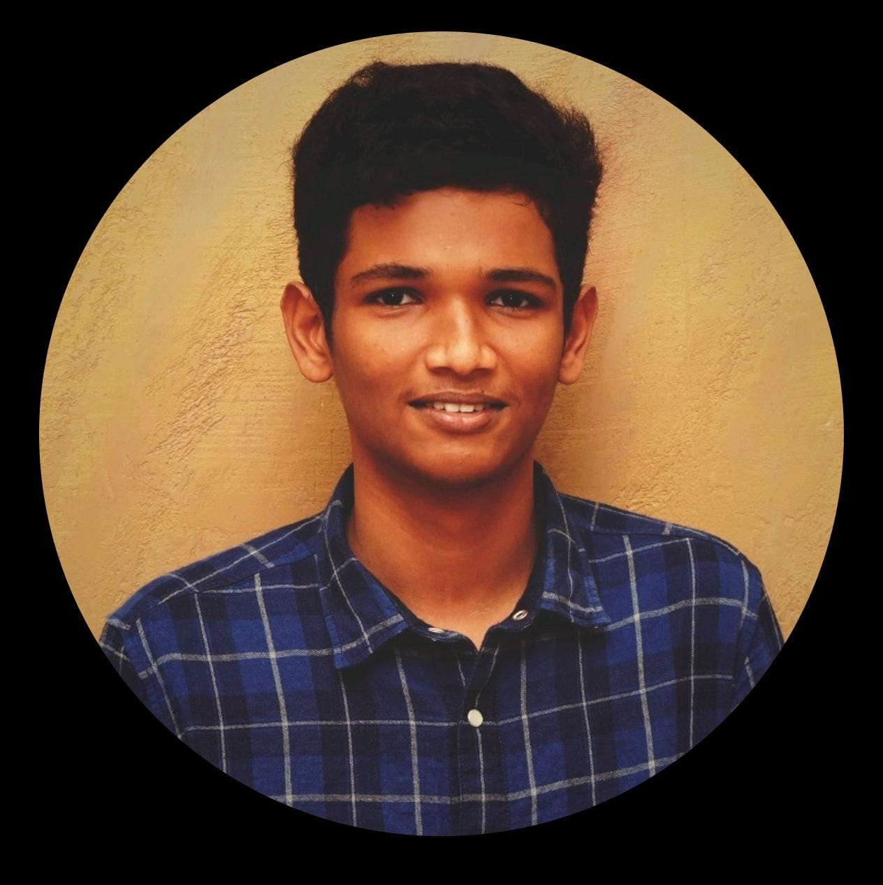

Sharveswar Madasamy

Summary
Motivated and enthusiastic Computer Science student with hands-on experience in Python, C++, and Java.
Passionate about building real-world projects, including AI-based systems and e-commerce platforms.
Strong team player with leadership experience in academic projects and hackathons.
Eager to learn and contribute to innovative tech solutions.
Education
- Bachelor of Technology (B.Tech) in Computer Science Engineering
- SRMIST KTR CHENNAI
- Expected Graduation: [2028]
- CGPA: >8.0
- Relevant Coursework:
- Data Structures
- Object-Oriented Programming
- Database Management Systems
- Artificial Intelligence
- Web Development
- Computer Networks
Work Experience
Team Leader – Mini Project: Electronic Device Detection using YOLOv8
Led a 4-member team to build an AI system using YOLOv8 and Arduino to detect electronic devices and trigger real-time responses.
Jan 2025 – Apr 2025
Integrated object detection with hardware control and laptop display for seamless demonstration.
Handled documentation, GitHub version control, and project presentation.
Hackathon Participant – SharpAIthon 2025
Developed a functional prototype of an AI-powered lead automation systemm using Supabase.
Focused on smooth user experience.
Gained hands-on experience in collaborative coding and rapid prototyping under time constraints.
Skills
-
Programming Languages:
-
Web Development:
- HTML
- CSS
- JavaScript
- Supabase
-
Tools & Platforms:
- PyCharm
- GitHub
- GitHub Desktop
- Arduino IDE
- VS Code
-
Technologies:
- YOLOv8
- OpenCV
- Arduino
- Object Detection
- AI Prototyping
-
Version Control:
-
Soft Skills:
- Team Leadership
- Problem-Solving
- Project Management
- Fast Learner
Certifications
-
Foundations of AI Internship
- Duration: 10 April – 10 May 2025
- Organized by: Microsoft initiative, Edunet Foundation, AICTE, SRMIST
-
NPTEL - Fundamentals of Object Oriented Programming
- Offered by IIT Roorkee via Swayam
- Duration: Jan – Apr 2025
- Score: 78% (Elite)
-
Udemy - C++ Complete Training Course for Beginners
-
Microsoft Azure AI Fundamentals: Computer Vision
- Certification from Microsoft Learn
-
Microsoft Azure AI Fundamentals: Document Intelligence and Knowledge Mining
-
Microsoft Azure AI Fundamentals: AI Overview
-
AWS Academy - Machine Learning Foundations
- Certification from Amazon Web Services (AWS)
-
AWS Academy - Cloud Foundations
-
HackerRank - Python (Basic)
-
Agnirva Space Internship Program
- From Agnirva.com Space Community
-
Certificate of Participation - Degree in a Day
- From GitHub Community SRM
Others
My Hobbies
Contact Me